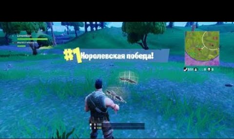

Fortnite — игра на выживание, основными действиями которой являются исследование, добыча ресурсов, строительство укрепленных зданий и битва с полчищами наступающих монстров. Стройте, разрушайте, рубитесь в PvP-сражениях. И помните - побеждает последний выживший! Вперед!
В Fortnite можно не просто бегать по локации и стрелять, как это было в турнаментах и шутерах прошлого, в ней есть режим "Сражение с Бурей", где вы играете на прохождение кампаний, а так же "Королевская битва", где все против всех и нет правила, кроме "победитель будет один".

В новой концепции вы можете добывать ресурсы как в RealTime стратегиях - у вас же есть огромная мощная КИРКА!!! Откуда добывать? Да хоть откуда - КИРКА она на то и КИРКА, а не кирка... Крушите все, что видите: машины, строения, мебель, деревья, кусты - все, что вы видите можно разбить, разобрать на ресурсные составляющие и использовать в своих целях;
Второй отличительной чертой является возможность строительства в стрелялке! Причем не только фортификации, как могло показаться из названия, поговорка "умный в гору не пойдет" тут не имеет смысла - в гору не пойдет тот, кто мало размахивал КИРКОЙ и не может на бегу построить себе лестницу и взбежать по ней на гору или мост через провал который не перепрыгнуть или ступеньки что бы спуститься со слишком отвесного склона, или ФОРТ;
Форты! В устаревших играх прошлых поколений они были только стационарными - пришел, захватил и стараешься удержать. Скукота! Теперь форт может лежать в кармане! И его можно построить там, где он срочно понадобился. Такой вот сюрприз для противников - вот они преследуют тебя, а вот они лежат россыпью Лута у подножия твоего форта)
Обилие различного оружия: пистолеты, автоматы, дробовики, гранатометы, гранаты, ловушки - да, теперь можно заманить противника и под видом раненой птички загнать его в ловушку. Также оружие получило градацию по качеству - от серого до легендарного, теперь не один вид дробовика на всех как было раньше;
Так же имеется и различная броня, так же имеющая разное качество;
В режиме ПВЕ, появляется возможность собрать и прокачать команду, что согласитесь уже не простое развлечение в стиле убей всех и выживи - тут и подумать не грех.
Вы ведь уже решили скачать Fortnite и примерить на себя все эти новинки